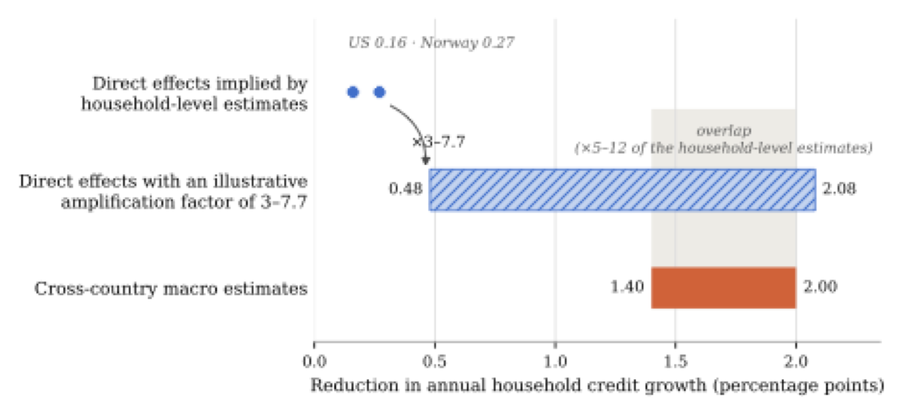

Aggregate effects and equilibrium incidence
The household-level evidence in Section 4 compares households with different exposure to mortgage constraints while holding common market conditions fixed. A policy tightening can, however, change those market conditions. Lower housing demand may affect house prices and rents, while lenders may adjust mortgage pricing, underwriting, and the allocation of credit. These responses spread the effects of the policy beyond the households whose borrowing capacity changes directly.
In term (II) in the framework, market adjustment matters in two ways. First, changes in prices and lending conditions create gains and losses according to the positions that households hold. A fall in house prices, for example, benefits prospective buyers but reduces the wealth of existing owners, while higher rents redistribute from tenants to landlords. Second, a market response can feed back into effective borrowing capacity through . Section 5.1 reviews these market responses and what we know of their incidence.
The same adjustments determine how the direct credit response documented in Section 4 translates into the total change in household credit. Section 5.2 therefore turns to aggregate credit growth, the outcome most closely aligned with policymakers’ stated objectives and the key stability-relevant variable entering term (III). Comparing aggregate estimates with the direct effects implied by household-level studies reveals a sizable aggregation gap, which is consistent with quantitatively important general equilibrium amplification but does not identify it.
5.1Market adjustment and equilibrium incidence
We organize the evidence around three market outcomes: house prices, rents, and mortgage terms and credit allocation.1 For each, the relevant questions are whether the policy changes the market outcome, who gains and loses from that change, and whether it feeds back into borrowing capacity or aggregate credit.
5.1.1House prices
Mortgage constraints can lower house prices by reducing how much prospective buyers are able to bid, and whether they bid at all. The impact on prices, however, depends critically on market segmentation and housing supply elasticities. This is evident in theoretical models, where the impact of credit access on house prices varies strongly with modeling assumptions. In Kaplan et al. (2020), for instance, a change in credit conditions moves homeownership and leverage but has little effect on prices, because the option to rent leaves few households constrained in their consumption of housing services. In Favilukis et al. (2017), by contrast, credit conditions affect the housing risk premium and have much larger price effects. Greenwald and Guren (2025) relate these differences in results to the degree of segmentation between owner-occupied and rental housing. They argue that with a frictionless rental sector, landlords absorb the demand of constrained buyers and prices are pinned down by rents, whereas with segmented markets, credit-driven demand moves prices. Guren (2026) offers a longer discussion of how credit affects house prices in structural models.
The empirical evidence on house price effects is mixed. Araujo et al. (2020) survey a large number of studies and find weaker and more imprecise effects of macroprudential policy on house prices than on credit. Cross-country LTV tightenings reduce household credit by about 6 percent and real house prices by about 8 percent in Richter et al. (2019). Within-country studies based on micro data generally find larger, negative effects. They use cross-sectional variation for sharper identification, but do not necessarily capture aggregate effects. See Gatt (2024) and Peydró et al. (2026) for surveys. Acharya et al. (2022) show that the Irish LTV and LTI limits slowed annual house-price growth in the urban markets most exposed to the rules from well above 20 percent to around 4 percent, while growth in less exposed markets remained stable. Their results further point toward a role for expectations, as Irish households revised their future house-price expectations downward in response to the policy. Kelly et al. (2018) also find lower Irish prices through the credit-availability channel. Bäckman and Lutz (2025) study a mortgage constraint loosening and estimate that the introduction of interest-only mortgages in Denmark raised house prices by about 36 percent over the subsequent boom.
Several studies exploit regional variation in mortgage constraints or variation in the treatment of different sub-markets. In New Zealand, Armstrong et al. (2019) estimate relative price effects of around 3 percent by comparing regulated properties with exempt new construction, whereas Andrews (2024) finds no significant response in the national house-price index. Han et al. (2021) show that a targeted increase in down-payment requirements reshaped asking prices and bidding around the regulatory threshold in Canada, but find no differential decline in house-price growth across more- and less-exposed Toronto neighborhoods.
Chi et al. (2024) use an LTV tightening that only applied to selected districts of Taiwan to compare sales on either side of district borders. After the 2014 tightening, prices on the treated side fell by about 6 percent relative to the untreated side and did not recover when the limits were lifted. Their estimates imply a leverage–house price elasticity between 0.75 and 1. In Hong Kong, more expensive properties faced lower LTV caps, and Nielsen (2019) uses this variation to estimate an elasticity of house prices with respect to the LTV limit of about 0.8. In Israel, higher capital charges on high-LTV mortgages lowered the prices of homes likely to be bought with such loans by about 2.5 percent, with larger effects in expensive regions (Laufer and Tzur-Ilan 2021). House price effects can also build over time. Johnson (2020) uses a 1999 divergence in the debt-to-income rules of Fannie Mae and Freddie Mac to show that counties more exposed to the tighter rule saw an immediate relative decline in house prices that grew over the following years, and a smaller boom and bust during the 2000s.
In sum, theory tells us that the house-price responses should be largest where housing supply is inelastic, owner-occupied and rental markets are segmented, and constrained buyers represent a large share of demand. While the empirical evidence on house-price effects is somewhat mixed, it seems to support a qualified conclusion. Mortgage constraints do not always lower national house-price growth, but studies tend to find that they can produce sizable price responses in exposed markets, roughly in proportion to the tightening in leverage where limits target specific locations or price segments. Differences in the degree of segmentation or in housing supply elasticities offer an alternative explanation for why changes in mortgage constraints do not always lower house prices, and there is little research on how important these factors are for differences across studies.
The benefits of lower house prices are not evenly distributed. Prospective buyers benefit, while existing owners and net sellers experience capital losses (Fagereng et al. 2025). Because a homeowner who stays in place is hedged against changes in the cost of housing (Sinai and Souleles 2005), a price change is mainly a transfer between those who will buy and those who will sell rather than a change in aggregate wealth (Buiter 2010). Younger and lower-wealth households are more likely to be prospective buyers, whereas older and wealthier households own a larger share of the housing stock. A decline in prices can therefore offset part of the direct burden on prospective buyers. In terms of feedback effects, lower house prices directly reduce mortgage capacity under an LTV limit by lowering collateral values for existing owners who buy again (Stein 1995; Lamont and Stein 1999). This collateral feedback is absent from a pure LTI or DTI limit, although house-price changes may still affect desired borrowing and the distribution of households across constraints.
5.1.2Rents
Mortgage constraints may also affect rental markets. Households that delay or abandon a purchase add to rental demand. At the same time, investors may purchase some of the properties no longer bought by prospective owner-occupiers and make them available for rent. The effect on rents depends on which response dominates and on the elasticity of rental supply. Rules that also effectively restrict mortgages for secondary homes or investment properties may place additional upward pressure on rents by limiting the supply response.
The empirical evidence is limited but points consistently in one direction. For mortgage constraints themselves, direct evidence comes from the Irish setting. Castellanos et al. (2024) apply the county-level exposure measure of Acharya et al. (2022) to rents and find that, in the counties where the 2015 limits were most binding, house prices grew less and rents grew more over the following two years. Specifically, a one-standard-deviation increase in exposure is associated with 4.2 percent lower house-price growth and 2.5 percent higher rent growth. The authors calibrate a life-cycle model to the Irish market in which the limits raise rents by about 4 percent at the peak and 3 percent in the long run, with the losses concentrated among young and middle-income households. Evidence on broader credit tightenings points the same way. In the United States, metropolitan areas whose lenders tightened mortgage standards more after 2008 saw homeownership fall and rents rise, with annual rent growth about 2 percentage points higher than it would otherwise have been (Gete and Reher 2018).
The estimated increase in rents also speaks to the segmentation question raised in Section 5.1.1. Rents rising while prices fall in the exposed Irish counties indicates that rental supply did not expand in step with rental demand. The Irish result thus illustrates how a policy that lowers the price of owner-occupied housing can nevertheless leave prospective buyers worse off, given that they remain in the rental market for some time.
Higher rents transfer resources from tenants to landlords and may therefore reinforce the distributional pattern of the direct effects. The households most likely to remain renters because of a mortgage constraint are young and have relatively little wealth, while rental property is disproportionately owned by wealthier households. Rent changes do not mechanically alter mortgage capacity under an LTV or LTI limit, but they can do so indirectly by affecting disposable income and the rate at which prospective buyers accumulate a down payment. Despite the importance of this channel, the reduced-form evidence on rents remains limited and few studies consider the supply side of rental markets.
5.1.3Mortgage terms and credit allocation
Lenders can respond to mortgage constraints by changing interest rates, fees, underwriting standards, and the allocation of lending across borrowers, regions, and asset classes. The UK cap on the share of high-LTI originations, discussed in Section 4.2, shows that the policy changes both the price of mortgage credit and who receives it. Constrained lenders charged more for high-LTI loans, and lenders with spare capacity expanded such lending mainly to borrowers other than low-income ones (Peydró et al. 2024).
The Irish evidence shows that reallocation can extend beyond the regulated segment. Banks most exposed to the LTV and LTI limits shifted mortgage lending from lower-income to higher-income households and from urban to rural markets. They also increased lending to riskier corporate borrowers and expanded their holdings of high-yield securities (Acharya et al. 2022). Reallocation also crossed borders: Irish banking groups took on more leveraged mortgage lending in the United Kingdom after the Irish limits were introduced, with the largest increases in LTV and LTI ratios for first-time buyers (McCann and O’Toole 2019). The initial reduction in constrained mortgage lending was therefore partly accompanied by additional credit elsewhere.
These responses spread the incidence of the policy. Borrowers who face higher mortgage rates or lose access to credit are worse off, while households and firms that receive reallocated lending may benefit. Bank owners may gain or lose depending on how the policy affects margins, loan volumes, and portfolio risk. Reallocation also matters for the corrective benefit. A reduction in high-LTV mortgages lowers financial vulnerability only to the extent that the displaced credit does not reappear in an equally or more fragile form.
5.2From direct to aggregate credit effects
Given that house prices, rents and mortgage terms are affected, a natural question to explore is the overall implications for credit. For instance, policy-induced movements in house prices can amplify the effects of mortgage constraints on aggregate credit. By reducing the purchasing capacity of constrained households, a tightening can put downward pressure on house prices. Under an LTV limit, lower prices also create a feedback effect on mortgage capacity. Lender responses may reinforce or offset this mechanism. We now turn to macro estimates of the effect of mortgage constraints on credit. Comparing these estimates with the household-level effects in Section 4 reveals a sizable aggregation gap and illustrates the importance of market-level adjustments for understanding the overall effect on credit, which is a key input into the overall effectiveness of mortgage constraints for reducing external costs.
5.2.1Macro estimates of credit effects
The macro literature estimates the relationship between mortgage constraints and aggregate credit growth using variation across countries and over time. This avoids extrapolating from a particular group of exposed households, but it creates other comparability challenges. Some studies compare periods in which a constraint is in place with periods in which it is absent, while others study discrete tightening and easing actions. Policy measures, credit aggregates, and estimation horizons also differ.
Cerutti et al. (2017) use indicators for whether borrower-based constraints are in place. In advanced economies, annual real household credit growth is 1.4 percentage points lower when a strictly enforced LTV cap is in place and 1.8 percentage points lower when a DTI limit is in place, although the LTV estimate is imprecise. The point estimates for emerging economies are several times larger. Akinci and Olmstead-Rumsey (2018) instead record tightening and easing actions. They estimate that an additional LTV tightening lowers annualized housing-credit growth in the following quarter by about 1.4 percentage points, and a DSTI tightening by about 2 percentage points.
In general, meta-analyses supports these numbers, albeit with slightly smaller estimates. Combining results across 58 studies, Araujo et al. (2020) find that a typical macroprudential tightening, which includes a number of tools outside of mortgage constraints, lowers year-on-year total credit growth by roughly 0.6 percentage points. Malovaná et al. (2025) focus on borrower-based measures and convert the estimates to a common outcome. Their unadjusted means imply reductions in annual credit growth of about 0.9 percentage points for LTV measures, 1.2 percentage points for income-based measures, and 2 percentage points when the two are used jointly. The authors further apply an adjustment for potential publication bias, i.e. selective reporting of estimates with the expected sign and statistical significance. With this adjustment, the pooled range across instruments is approximately 0.6–1.1 percentage points. However, the sample of studies in Malovaná et al. (2025) also contains a sizable share of micro-level studies, and are hence not directly comparable. Our preferred macro-range is therefore 1.4 - 2 percentage points based on the estimates in Cerutti et al. (2017) and Akinci and Olmstead-Rumsey (2018).
5.2.2The aggregation gap
The aggregate estimates are substantially larger than the direct effects documented in Section 4, which implied reductions in annual aggregate credit growth of approximately 0.16–0.27 percentage points. These calculations include both smaller mortgages among continuing buyers and the loss of entire originations when households do not purchase. The preferred macro estimates are about five to twelve times larger. We refer to this as the “aggregation gap.”
The aggregation gap is relevant for both remaining terms of the framework. If market adjustment accounts for a meaningful share of the larger aggregate response, the household-level evidence captures only part of the policy’s incidence, making term (II) quantitatively important. The total credit response also enters term (III), where it is valued according to its effect on financial vulnerability. Understanding the source of the gap therefore matters for both who bears the costs of the policy and how large its potential corrective benefit may be.
The gap should not, however, be automatically interpreted as an estimate of general equilibrium amplification. The micro and macro studies differ in their samples, countries, policy changes, credit measures, estimation methods, and time horizons. Moreover, macro estimates may also capture anticipation effects, concurrent policy changes, or other developments around the time of a tightening, while naive extrapolation of micro results to the aggregate economy is a rough approximation at best. The cross-sectional comparisons in micro studies might also suffer from contaminated control groups (see, for instance, Berg et al. 2021). The direction of the resulting bias depends on which households the spillover affects most. If lower house prices reduce borrowing more among comparison households, for instance because exposed households are already at the limit and cannot adjust further, the estimate understates the direct effect and the aggregation gap overstates amplification. If the spillover instead falls mainly on exposed households, as with the collateral feedback under an LTV limit, or if lenders reallocate credit toward the comparison group, as in Ireland, the estimate overstates the direct effect and the gap understates amplification. Appendix C.2 discusses diagnostics that can distinguish these cases.
With these caveats in mind, we discuss what share of the aggregation gap could plausibly result from general equilibrium amplification mechanisms such as house-price declines in the next subsection.
5.2.3How much amplification would close the gap?
Direct estimates of equilibrium amplification arising from changes in mortgage constraints are rare. It is therefore instructive to explore general equilibrium amplification to other credit shocks and see whether these shocks generate amplification on the order of what is implied by the estimates discussed above. We express each estimate below as the ratio of the total response to the direct response, where a ratio of one indicates no amplification. Such ratios are not model-free: the mapping from regional reduced-form estimates to an aggregate causal effect depends on the class of models assumed to generate the data (Mian et al. 2026; Sarto 2025a), and we therefore use them only to judge orders of magnitude.
Mian et al. (2026) estimate that the total regional response to the US credit expansion of the 2000s was approximately 4.5 times the direct response identified within local markets. Huber (2018) studies a lending cut at a large German bank and finds that the total county employment response is approximately 2.6 to 3.9 times the direct effect on borrowing firms, so local general equilibrium effects account for roughly 60 to 75 percent of the total. Using a different approach, Sarto (2025b) separates propagation through house prices from propagation through lender balance sheets for US counties during the same credit expansion.2 His estimates imply a ratio of total to direct effects of about 5.6, ranging from 4.2 where housing supply is elastic to 7.7 where it is inelastic.
The estimates above are regional in nature, and regional effects need not coincide with national effects. They may overstate aggregate amplification when housing demand or lending shifts from exposed to less exposed areas, but understate it when time fixed effects absorb common national changes in house prices or bank funding. Geographic openness matters as well. Credit shocks spill across regions when households purchase housing elsewhere, making national effects larger than local estimates, while international leakage may weaken this amplification in small open economies. Consistent with this, Mian et al. (2026) find larger credit multipliers in less open metropolitan areas, and Gertler and Gilchrist (2019) find that aggregate house-price shocks have larger employment effects than local shocks. Monetary policy can provide an offset (Chodorow-Reich 2019). While country-specific euro-area mortgage regulations are unlikely to move the common policy rate, central banks with independent monetary policy could in principle ease in response to weaker housing demand.
Lender networks can also move the regional-to-national correction in either direction. A shock that reduces lender net worth may contract credit across all markets served by the affected banks, causing regional estimates to understate aggregate amplification. Sarto (2025b), for example, finds substantial amplification from shocks originating in other regions. By contrast, a borrower-based limit that removes lending opportunities without reducing bank capital may induce lenders to re-deploy credit toward less exposed regions, borrowers, or asset classes. Such reallocation makes regional effects larger than the aggregate contraction, as illustrated by Ireland, where mortgage issuance changed little after the 2015 limits (Acharya et al. 2022). The correction from regional to national effects therefore depends on whether the dominant mechanism is propagation or reallocation, and mortgage constraints may activate both simultaneously.
With these caveats noted, Figure 3 uses the estimates from related credit settings to illustrate how amplification could affect the comparison. Applying multipliers of 3 to 7.7, the range spanned by the regional estimates above, to the household-level effects of 0.16–0.27 percentage points produces total effects of 0.5–2.1 percentage points, which spans the cross-country macro estimates of 1.4–2 percentage points. The overlap, however, is confined to the upper part of the multiplier range: the macro estimates correspond to five to twelve times the household-level effects, so only amplification of the size Sarto (2025) finds in counties with inelastic housing supply, or the upper end of the regional credit multipliers, closes the gap, and the German and US employment benchmarks of 2.5–4.5 do not. Because the benchmarks come from other types of credit shocks, the exercise serves as a plausibility check rather than an estimate of amplification from mortgage constraints. Its conclusion is that equilibrium effects at the upper end of those found elsewhere in the credit literature are sufficient to reconcile the two sets of estimates, but, importantly, they are yet to be estimated for mortgage constraints, and the gap may also reflect upward bias in the macro estimates.

Notes. Notes. The household-level estimates are back-of-the-envelope aggregate implications of DeFusco et al. (2020) for the United States (0.16) and Aastveit et al. (2022) for Norway (0.27). The hatched bar applies factors of three to 7.7 to these estimates, the range of the regional multipliers reviewed in the section above, with 7.7 the estimate of Sarto (2025) for counties with inelastic housing supply. The shaded band marks the overlap with the macro range, which corresponds to factors of five to twelve. The macro range summarizes the cross-country studies reviewed above. The comparison is illustrative because the underlying studies differ in countries, policy tools, periods, outcomes, and research designs.
5.3What the evidence establishes about term (II)
The evidence suggests that the market responses collected in in term (II) may be quantitatively important, but also clearly illustrates that more evidence is necessary on the size of spillovers within a single market. Aggregate credit estimates are several times larger than the effects obtained by extrapolating from household-level studies. This gap does not directly identify general equilibrium amplification, as the underlying studies differ in their settings, methods, and outcomes. It is nevertheless consistent with sizable responses in house prices, lending conditions, and credit allocation. Evidence from related credit shocks also shows that general equilibrium effects of this magnitude are plausible.
The incidence of these responses depends on the channel. Lower house-price growth benefits prospective buyers, who tend to be younger and less wealthy than existing owners. This may offset some of the adverse distributional effects identified in term (I). House-price declines also reduce housing wealth for existing owners and, under an LTV limit, can lower the collateral available to homeowners who wish to move or refinance. This latter effect enters term (II) through the term , and is absent from a pure income-based limit. A fall in house prices can therefore benefit first-time buyers while tightening borrowing capacity for existing owners.
Other market responses may, however, reinforce the direct burden. Higher rents fall on households that remain in the rental market because they cannot buy, potentially offsetting part of the gain from lower house prices for prospective buyers. The distributional incidence of lender reallocation is less clear. Credit that is withdrawn from highly leveraged borrowers or expensive regions may be redirected toward households with lower leverage, borrowers in cheaper areas, or firms and assets outside the regulated market. These groups are generally less exposed to the direct effect in term (I). The available evidence therefore shows that term (II) can redistribute the effects of mortgage constraints across households and markets in ways that differ from direct statutory exposure. What it does not yet provide is a joint estimate of these gains and losses, or a money-metric estimate of term (II) as a whole.
Notes
Other amplification channels could also be relevant, such as the interaction of macroprudential policy and monetary policy. For instance, a mortgage tightening that weakens housing demand and inflationary pressure may induce a more accommodative policy rate. Richter et al. (2019) do not find sizable impacts of LTV-changes on output or inflation in advanced economies, however.↩︎
Sarto (2025b) reports the multiplier as the general equilibrium response net of the direct effect: 2.90 on average, and 1.99 and 4.22 in counties with elastic and inelastic housing supply, respectively. This uses Sarto’s more conservative decomposition. To make the numbers comparable to those of Mian et al. (2026) and Huber (2018), we add Sarto’s estimated direct effect of 0.631 from Table 2 to the extra effect in Table 7 and divide by the direct effect. The ratio of the total to direct effect is then .↩︎